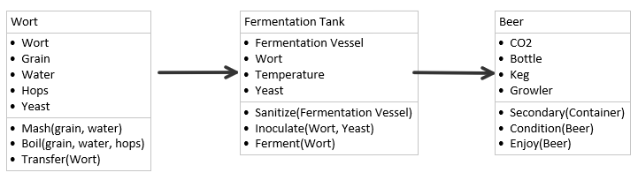
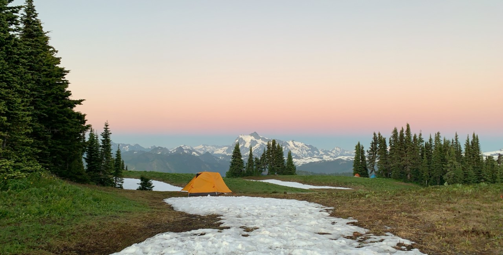

Hobbies
Here's a nice little list of somethings that I enjoy
Beer Brewing
-
I've been brewing since 2020 because of my curiosity on how the brewing process works and wanting to have a fun hobby to work on with my buddies. Here's a quick Unified Modeling Language diagram of the process for all you nerds out there!

-
My top three styles I have made so far are:
-
Oatmeal Stout // brewed November 2020
-
Saison // brewed August 2020
-
Imperial Ipa // brewed June 2020
-
As i've brewed i've learned a ton about the process and have new found respect for the craft, which has led me to begin a project called BrewberryPi. If you want to learn more about the project, help develop or want to incorporate this tech into your own brewing process let's get in contact!
Backpacking

-
I've been backpacking since 2015 when I was a senior in highschool! The picture above is of Skyline Divide over at Mt. Baker! It was an absolute treat of a trip! If you ever get the chance I highly recommend you at least take a day trip up to the mountain.
-
My top three backpacking trips so far:
-
Skyline Divide over at Mt. Baker
-
Thunder Creek in Mt. Baker National Park
-
Gem Lake in the Snoqualmie National Forest
-
With it's steep price point, backpacking hasn't been the easiest to get into for a college student, but over the years I have been able to aquire better tools for the trade and will continue this for the rest of my life!
Dungeons & Dragons
-
Being the son of a nerd, d&d has been something I've known about since a child. It's absolutely a blast to gather around a table with some of your closest friends and just tell a massive story where everyone is fully engaged and wanting to just have a blast.
-
One of my favorite aspects of D&D is the ability to create a world and system that revolves around my buddies I am playing with. The stories that occur during a session and the shenanigns that occur always great fun.